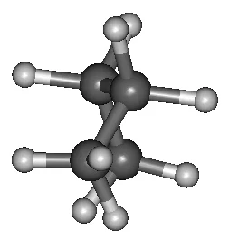
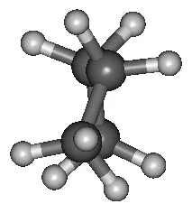
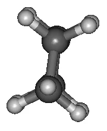
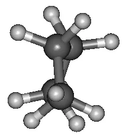
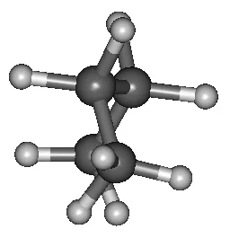
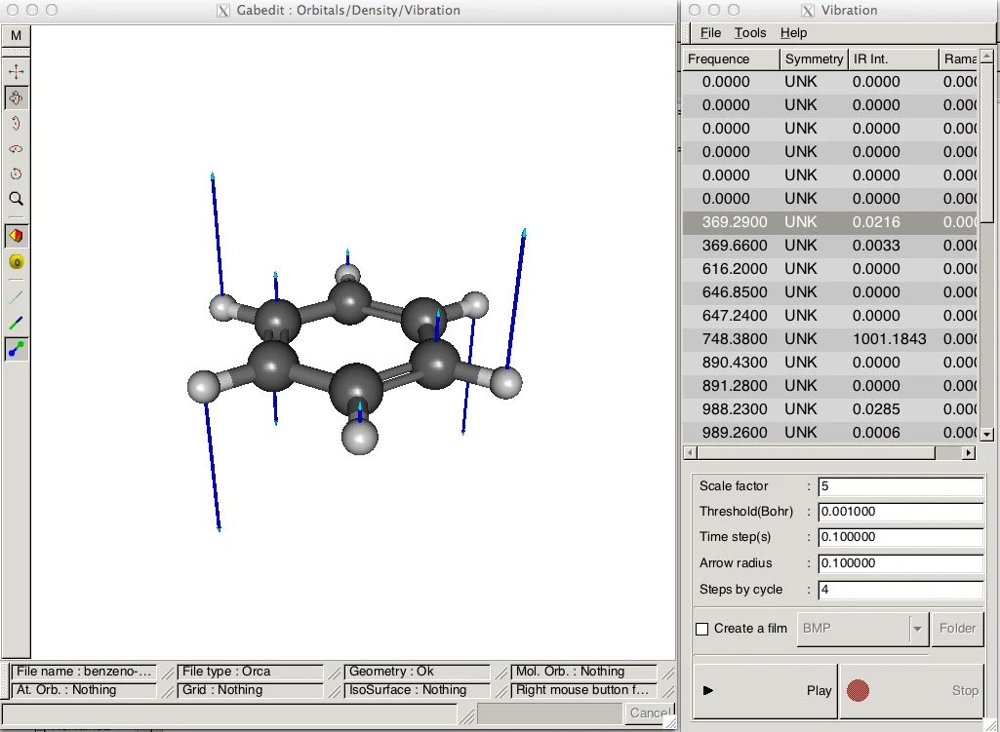
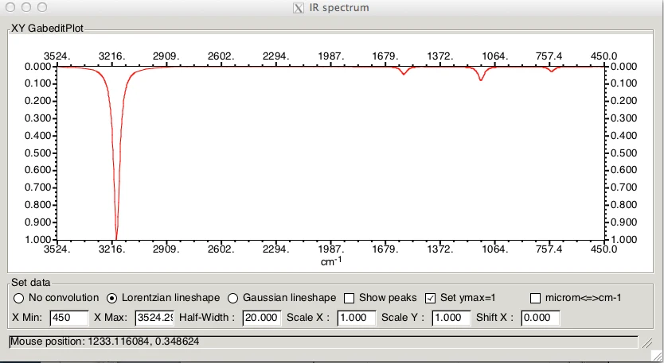
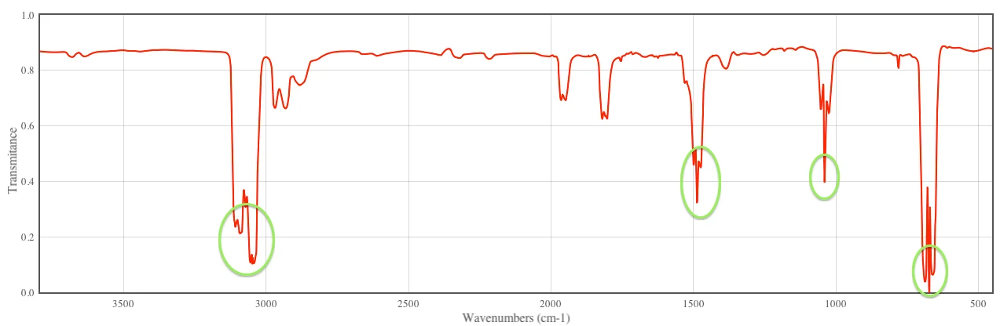
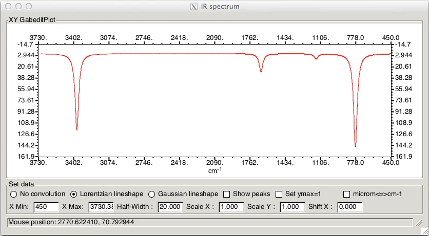

Experimento 5: frequências e termoquímica
O cálculo de frequências tem várias finalidades:
- Identificar a natureza de um ponto estacionário na superfície de energia potencial.
- Calcular a correção de ponto zero e outras grandezas termodinâmicas, como entalpia e entropia.
- Prever espectros de infravermelho.
As frequências podem ser calculadas de forma numérica (NumFreq) ou analítica (Freq). A analítica é muito mais rápida,
mas usa mais memória RAM (o usuário precisa definir esse parâmetro), e vários métodos não têm frequências analíticas implementadas no ORCA.
Exercício 8: natureza dos pontos estacionários do Exercício 7
Com a SEP do Exercício 7, vamos agora localizar os mínimos e os estados de transição do equilíbrio conformacional do butano. A SEP dá uma boa ideia de onde estão esses pontos: eles não estão exatamente localizados, mas estão bem próximos.
Pontos de mínimo
Abra os arquivos *.xyz gerados no scan. Para os mínimos, use [nome do arquivo].008.xyz (perto de 60°) e
[nome do arquivo].018.xyz (perto de 180°).
- No GABEDIT, clique no ícone de desenho > Read > XYZ file, escolha o arquivo e clique em Open.
- Feche a janela e gere o input do ORCA com o método semiempírico AM1 e o tipo de cálculo
Equilibrium structure search + Frequencies, que procura o mínimo e depois calcula as frequências.
NumFreqpede ao programa que calcule as frequências após a otimização.
! Opt AM1 NumFreq
* xyz 0 1
C -1.893774 -1.023497 -0.322840
C -0.426035 -0.730002 -0.498578
H -2.058812 -1.719830 0.534603
H -2.315864 -1.495466 -1.243009
H -2.455529 -0.079171 -0.122298
C 0.398473 -1.979656 -0.725578
H -0.044705 -0.204648 0.417597
H -0.285479 -0.028962 -1.363739
H 1.485412 -1.724324 -0.606454
C 0.180877 -2.582207 -2.089700
H 0.149275 -2.738497 0.062942
H 0.834309 -3.477824 -2.225446
H 0.423970 -1.844511 -2.892216
H -0.882430 -2.899757 -2.216947
*Procure a tabela VIBRATIONAL FREQUENCIES. A ausência de frequências negativas indica que a geometria é um ponto de mínimo (as seis primeiras, iguais a zero, são as translações e rotações):
-----------------------
VIBRATIONAL FREQUENCIES
-----------------------
0: 0.00 cm**-1
...
5: 0.00 cm**-1
6: 75.50 cm**-1
7: 161.06 cm**-1
8: 211.02 cm**-1
9: 344.45 cm**-1
10: 462.99 cm**-1
...
40: 3154.81 cm**-1
41: 3155.07 cm**-1Faça o mesmo para o ponto perto de 180°.
Estados de transição
Agora use os pontos de máximo em 0° ([nome do arquivo].001.xyz) e 120° ([nome do arquivo].012.xyz). Gere o input com
AM1 e o tipo de cálculo Transition state + Frequencies, que procura o ponto de sela e depois calcula as frequências:
! OptTS NumFreq AM1
* xyz 0 1
C -1.819945 -0.899429 -0.725588
C -0.394450 -0.790379 -0.252204
H -2.255824 -1.892766 -0.460844
H -1.886271 -0.768987 -1.832568
H -2.442112 -0.105969 -0.243185
C 0.561519 -1.815697 -0.834769
H -0.381985 -0.877944 0.867770
H -0.014858 0.238736 -0.495051
H 1.398118 -1.276721 -1.356042
C -0.054953 -2.792444 -1.801157
H 1.030836 -2.393344 0.006779
H 0.724355 -3.502526 -2.172449
H -0.492255 -2.263668 -2.682041
H -0.862484 -3.387212 -1.310315
*Na tabela VIBRATIONAL FREQUENCIES, a presença de uma frequência negativa (−132,46 cm⁻¹) indica um ponto de sela (estado de transição):
-----------------------
VIBRATIONAL FREQUENCIES
-----------------------
0: 0.00 cm**-1
...
5: 0.00 cm**-1
6: -132.46 cm**-1 ***imaginary mode***
7: 176.00 cm**-1
8: 284.32 cm**-1
...
41: 3154.94 cm**-1O GABEDIT permite visualizar cada modo normal. Clique no ícone de visualização de propriedades, depois em M > Animation > Vibration e em File > Read > Read a Orca output file. Mude o Scale Factor para 5, selecione o modo e clique em Play. Os vetores mostram a magnitude e a direção do movimento de cada átomo naquele modo. Gire a molécula até uma perspectiva parecida com uma projeção de Newman. No modo imaginário, a molécula oscila girando o diedro C–C–C–C: a frequência negativa representa o movimento dos átomos ao longo da coordenada intrínseca desse ponto de sela, que liga as duas conformações alternadas.





Sequência de quadros da animação do modo imaginário.
Exercício 9: modos normais e espectro de IV do benzeno
Vamos otimizar o benzeno e gerar seus espectros de IV em diferentes níveis de teoria.
- Desenhe o benzeno e gere o input do ORCA com AM1 e o tipo de cálculo Equilibrium structure search + Frequencies.
- Abra a animação das vibrações como acima (M > Animation > Vibration, Scale Factor = 5). A coluna IR int mostra quanto cada modo contribui para o espectro de IV.

Para gerar o espectro, clique em Tools > Draw IR Spectrum:

Comparando com o espectro experimental abaixo, vemos que esse nível de teoria não reproduz todos os modos experimentais e suas intensidades, mas encontra os modos principais (destacados em verde). Lembre-se de que esses cálculos envolvem várias aproximações.

Repita com HF/6-31G. O cálculo leva bem mais tempo, mas as intensidades ficam mais próximas das experimentais.

Correção de ponto zero e propriedades termodinâmicas
A energia interna total de um sistema é dada por:
\[ U = E_{el} + E_{ZPE} + E_{vib} + E_{rot} + E_{trans} \]
- \(E_{el}\): energia total obtida no cálculo de estrutura eletrônica, \(E_{el} = E_{kin-el} + E_{nuc-el} + E_{el-el} + E_{nuc-nuc}\).
- \(E_{ZPE}\): correção da energia vibracional de ponto zero, obtida no cálculo de frequências.
- \(E_{vib}\), \(E_{rot}\) e \(E_{trans}\): contribuições dos modos vibracionais populados e das energias rotacional e translacional.
A entalpia é \(H = U + k_B T\), onde \(k_B\) é a constante de Boltzmann e \(T\) a temperatura em kelvin, e a energia livre de Gibbs é \(G = H - TS\), onde \(S\) é a entropia. Por padrão esses termos são calculados a 298,15 K e 1 atm; temperatura e pressão podem ser alteradas.
Exercício 10: energia livre de Gibbs do benzeno
Para obter a correção de ponto zero, a entalpia e a entropia é preciso calcular as frequências. Vamos aproveitar o cálculo do benzeno em HF/6-31G. Na saída, o bloco de termoquímica começa assim, listando as aproximações usadas:
--------------------------
THERMOCHEMISTRY AT 298.15K
--------------------------
Temperature ... 298.15 K
Pressure ... 1.00 atm
Total Mass ... 78.11 AMU
Throughout the following assumptions are being made:
(1) The electronic state is orbitally nondegenerate
(2) There are no thermally accessible electronically excited states
(3) Hindered rotations indicated by low frequency modes are not
treated as such but are treated as vibrations and this may
cause some error
(4) All equations used are the standard statistical mechanics
equations for an ideal gas
(5) All vibrations are strictly harmonicA energia térmica (com as correções \(E_{ZPE}\), \(E_{vib}\), \(E_{rot}\) e \(E_{trans}\)):
Summary of contributions to the inner energy U:
Electronic energy ... -230.62447493 Eh
Zero point energy ... 0.10900912 Eh 68.40 kcal/mol
Thermal vibrational correction ... 0.00117212 Eh 0.74 kcal/mol
Thermal rotational correction ... 0.00141627 Eh 0.89 kcal/mol
Thermal translational correction ... 0.00141627 Eh 0.89 kcal/mol
-----------------------------------------------------------------------
Total thermal energy -230.51146114 EhMuitos trabalhos consideram apenas a correção de ponto zero: \(E_0 = E_{el} + E_{ZPE}\). A entalpia e a entropia vêm nos blocos seguintes:
--------
ENTHALPY
--------
The enthalpy is H = U + kB*T
Total free energy ... -230.51146114 Eh
Thermal Enthalpy correction ... 0.00094421 Eh 0.59 kcal/mol
-----------------------------------------------------------------------
Total Enthalpy ... -230.51051693 Eh
-------
ENTROPY
-------
Electronic entropy ... 0.00000000 Eh 0.00 kcal/mol
Vibrational entropy ... 0.00154427 Eh 0.97 kcal/mol
Rotational entropy ... 0.01113748 Eh 6.99 kcal/mol
Translational entropy ... 0.01852142 Eh 11.62 kcal/mol
-----------------------------------------------------------------------
Final entropy term ... 0.03120317 Eh 19.58 kcal/molPor fim, a energia livre de Gibbs:
-------------------
GIBBS FREE ENTHALPY
-------------------
The Gibbs free enthalpy is G = H - T*S
Total enthalpy ... -230.51051693 Eh
Total entropy correction ... -0.03120317 Eh -19.58 kcal/mol
-----------------------------------------------------------------------
Final Gibbs free enthalpy ... -230.54172010 Eh